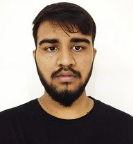

RESUME

NAME:JAGRUTH K Address:Indian Home Stores,
Poranki Vijayawada
Phone:8333810888
Email:jagruth_k@srmap.edu.in
OBJECTIVE
I am a fresher ready to explore the works around and have skills for C++, Python, SQL, and HTML. looking for workplace where I can input my knowledge.
EDUCATION
1st-2nd|MBS Davangere
- FROM 2005-2006
- Got 98% with first rank in the school
- Won CCA awards for quiz, drawing etc...
- Won 1st prize in running race
3rd-10th|JPS Davangere
- FROM 2007-20016
- Got above 80% in all the classes in the school
- Won CCA awards for brain buzzer, drawing, mono acting, debate etc...
- Won 1st prize in football and cricket
- Participated and backed Runners Trophy in the qiuz organized by PES University, Banglore
B.TECH 1st YEAR-Till Date|SRM University AP, Amaravati
- FROM 2018-Till Date
- Got 8.5 CGPA including three semesters
- Was winners of game organized by Ennovab Club in PVP Square
- I am currently part of Student Council
SKILLS
Programming|Skills
- Python
- C++
- C
- SQL
- HTML
Intrests|Fields
- Cryptpgraphy
- Cybersecurity
- Blockchain
ACTIVITIES|HOBBIES
Hobbies|Social
- An volunteer at MAD[Make A Difference]
- An volunteer of non registered NGO FFL[Food For Life]
- Like to part of social activities.
Hobbies|Sports
- Long Tennis
- Cricket
- Table Tennis
- Badminton
THANK YOU